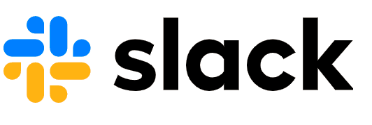

Transforma tu manera de trabajar con un único lugar para todo el mundo y todo lo que necesitas para hacer las cosas.
CONSIGUE SLACK PARA ANDROID
La clave de la productividad en Slack son los espacios organizados, llamados “canales”, uno diferente para cada proyecto en el que estés trabajando. Al tener a todas las personas, mensajes y archivos relacionados con un tema en un mismo lugar, puedes avanzar mucho más rápido.
Obtener más información sobre los canales ->¿Qué es un canal?
0:15
Cómo crear un canal
Date la flexibilidad de trabajar cuando, donde y como mejor te venga. Toma el control de las notificaciones, colabora en directo o en el momento que prefieras y encuentra respuestas en las conversaciones de toda la empresa.
Abrir la puerta a horarios de trabajo más flexibles en Slack ->Pausa las notificaciones
Ofrece a todos tus compañeros (de dentro y fuera de tu empresa) una forma más productiva de mantener la sincronización. Responde más rápidamente con emojis, mantén las conversaciones centradas en los canales y simplifica toda tu comunicación en un mismo lugar.
Descubrir cómo trabajar con socios externos en Slack ->Trabaja con socios externos mediante Slack Connect
Trabaja con socios externos mediante Slack Connect
Cómo compartir ideas en un canal